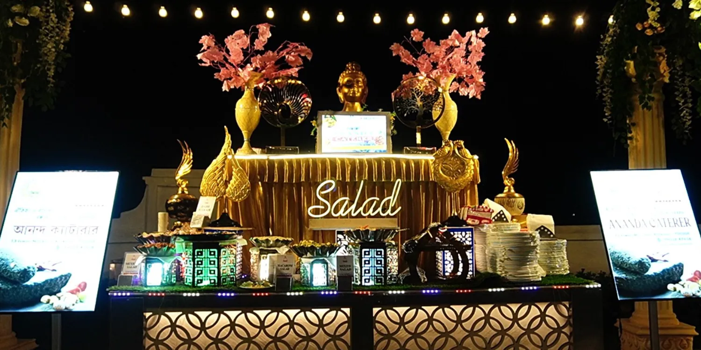
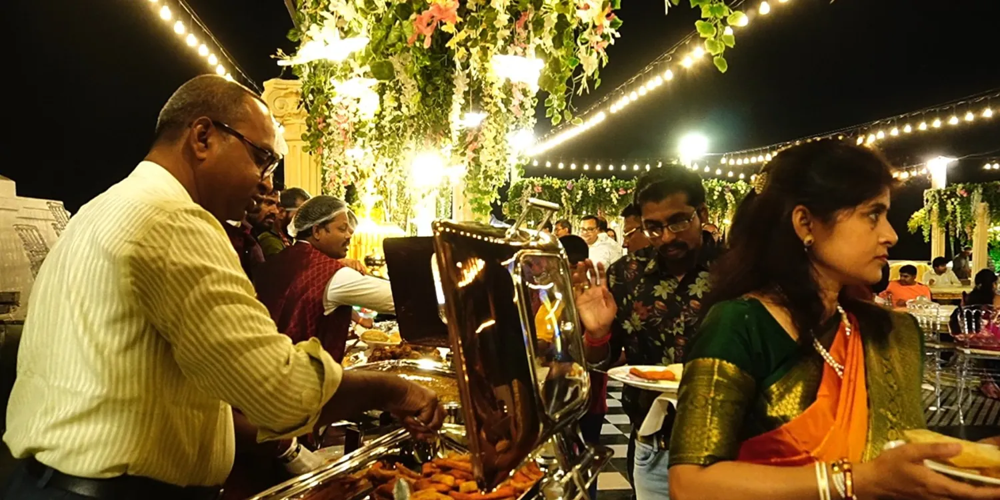
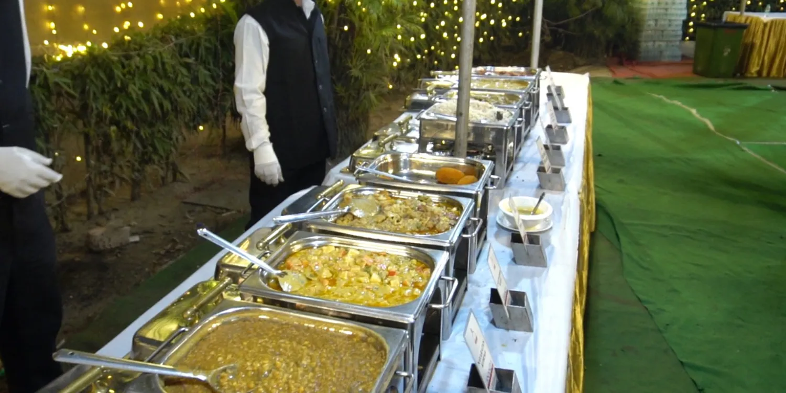
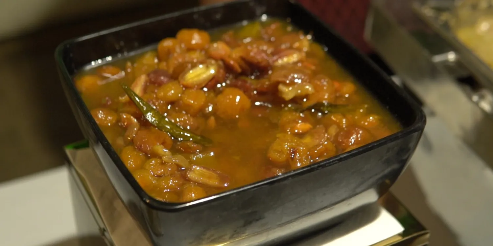
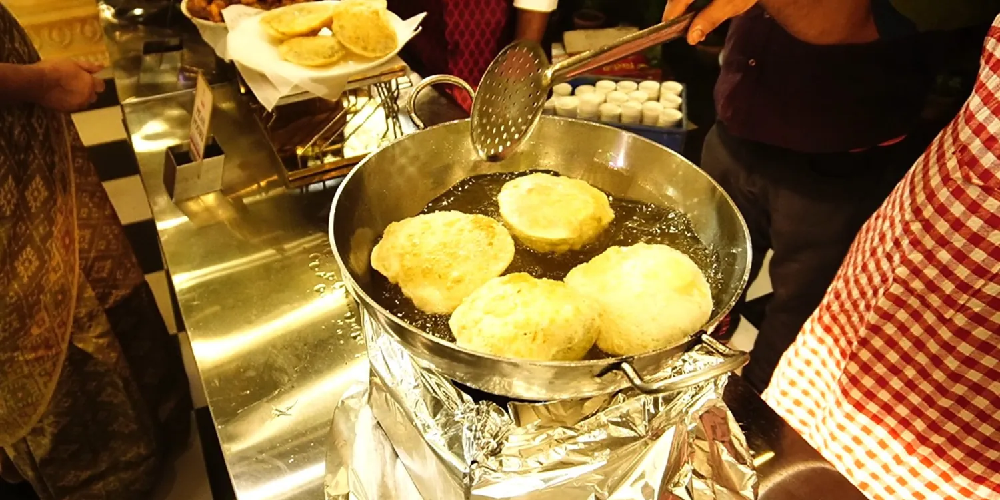
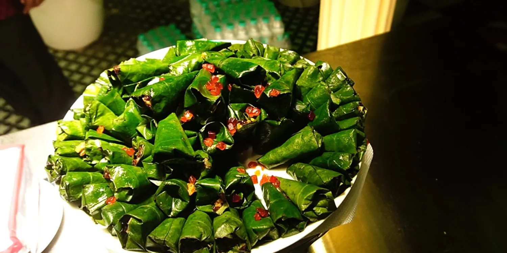
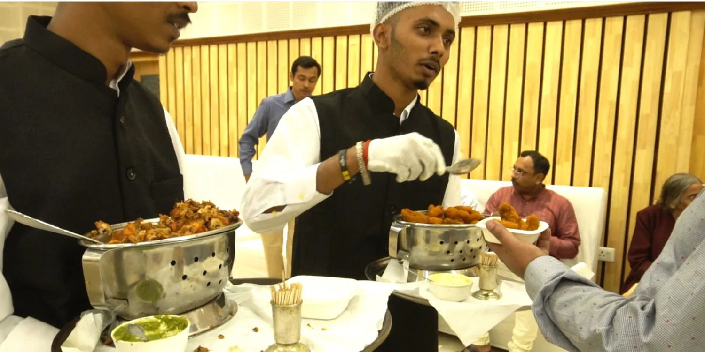
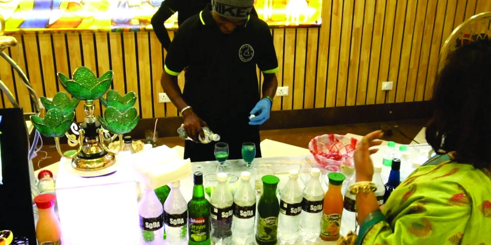
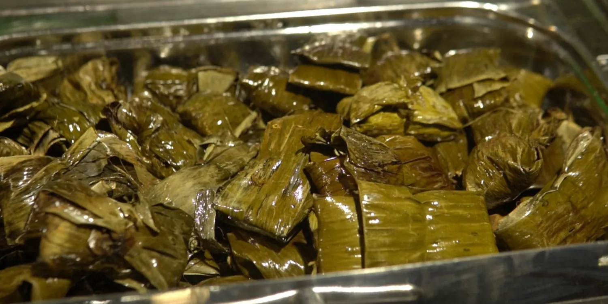

Share your occasion
Tell us your date, venue and approximate number of guests.

ANANDA CATERER · KOLKATA
Bring your people together over Bengali, Mughlai and Indian flavours, thoughtfully served for your occasion.
Good food. Warm gatherings.
EVERY OCCASION HAS A FLAVOUR
Make room for conversation, celebration and the dishes your guests will remember. Explore catering for the moments that matter.

Bengali flavours. Thoughtful presentation. A feast for your special day.

From milestone birthdays to business gatherings, bring everyone together over food.

Discuss an event menu for your home or office, with delivery arrangements confirmed by the team.


PREPARATION TO PRESENTATIONROOTED IN KOLKATA
Ananda Caterer is based in Goabagan, near Shyambazar. The business brings Bengali, Mughlai and Indian menus to weddings, private celebrations and corporate events.
From live preparation to the buffet, explore a glimpse of past occasions and talk to the team about your own.
Get to know AnandaMOMENTS AT THE TABLE



FROM YOUR IDEA TO THE EVENT
Tell us your date, venue and approximate number of guests.
Explore cuisine preferences, dietary needs and service arrangements with the team.
Request a tailored proposal and confirm availability before making plans.
LET’S PLAN YOUR TABLE
Your date, venue and guest count are a good place to start.